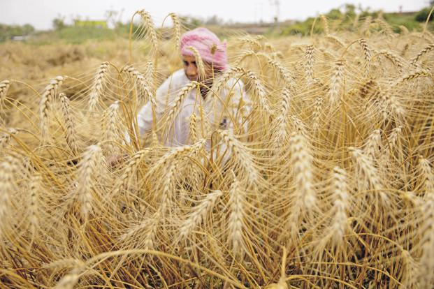
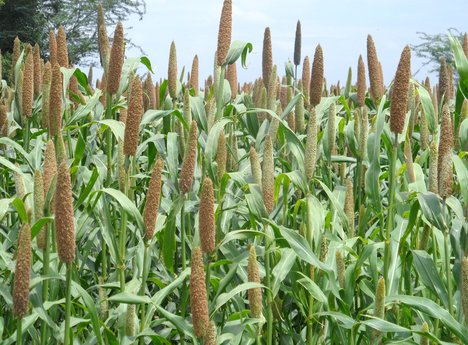
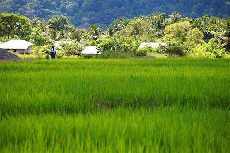
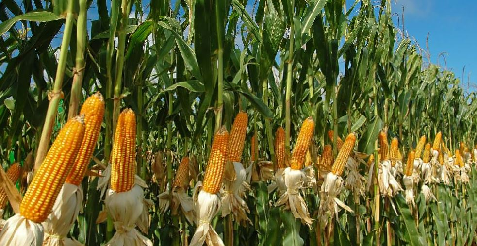
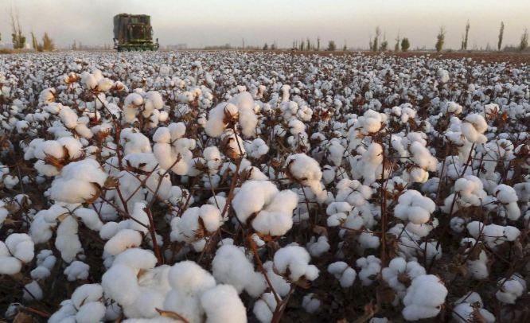
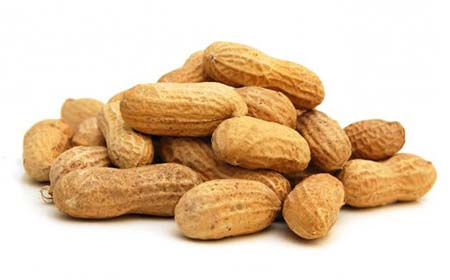
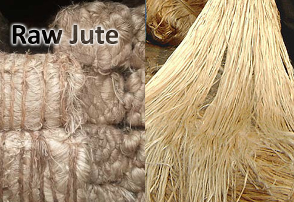

<link rel="stylesheet" href="../CSS/Crops.css">
<link rel="stylesheet" href="../CSS/Rabi.css">
<!DOCTYPE html>
<html lang="en">

    <head>
        <meta charset="UTF-8">
        <meta http-equiv="X-UA-Compatible" content="IE=edge">
        <meta name="viewport" content="width=device-width, initial-scale=1.0">
        <title>Rabi Crops</title>
    </head>

    <header>
        <h1>Rabi Crops</h1>
    </header>

    <main>
        <div>
            <h1>Major Rabi Crops</h1>
        </div>
    
        <section>
            <br clear="left"/>
            <b>Wheat</b>
            
            
            <p1>
                <br><br><b>About the crop :-</b>  Wheat (Triticum spp.) occupies the prime position among the food crops in the world. In India, it is the second important food crop being next to rice and contributes to the total foodgrain production of the country to the extent of about 25%. Wheat has played a very vital role in stabilizing the foodgrain production in the country over the past few years.<br>
                <br><b>Soil required for the crop :-</b> Wheat needs soil with a moderate amount of water holding capacity. Being very sensitive to water logging, heavy soils with poor drainage capacity is not preferred for wheat cultivation. Generally, black cotton soil with good drainage capacity and a neutral pH is preferred for cultivation. If wheat is grown as a dry crop heavy soil with a good drainage capacity is preferred. On the contrary, soil with moderate drainage capacity is preferred for wheat as irrigated crop.<br>
                <br><b>Weather conditions & Temperature needed :-</b> Wheat is a widely adaptable crop that can be grown in climates ranging from temperate to tropical and cold northern parts. In addition it can be cultivated anywhere from land on sea level to an altitude of up to 3300 meters. Places with a cool, moist weather for most part of the year followed by a short, dry and warm spell is most suited for wheat cultivation. This type of weather condition permits appropriate maturing and ripening of grains. However, areas with heavy rainfall, moist and warm climate are not suited for commercial wheat farming.<br>
                <!-- <br><b>Rainfall needed :-</b> If the crop is sown in monsoon time (July). it may require l to 3 irrigations depending upon rains. For summer crops, 6 to 7 irrigations may be carried out due to high temperature. In South India, Rabi season crops need about 4 to 5 irrigations.<br> -->
                <br><b>Largest Producing states :-</b> Haryana, Bihar, Gujarat, Punjab, Madhya Prades<br>
                <!-- <br><b>Average selling price of crop :-</b> 1200-1500 q/ha<br> -->
                <br><b>MSP provided for the crop :-</b> 1925 per quintals
            </p1>
        </section>
        <hr>
        
        <section>
            <br clear="right"/>
            <b>Bajra</b>
            
            
            <p3>
                <br/><br><b>About the crop :-</b>  Bajra is popularly known as “pearl millet” and belongs to the family of Gramineae. This grain is basically originated from India or Africa. Bajra is a coarse grain crop and considered to be the poor man’s staple nourishment and suitable to cultivate in drylands.  Major Bajra production states in India are Rajasthan, Maharashtra, Haryana, Uttar Pradesh, and Gujarat. Bajra can also be used as valuable animal fodder. It is one of the major crops of China, India, South-Eastern Asia, Sudan, Pakistan, Arabia, Russia & Nigeria.<br>
                <br><b>Soil required for the crop :-</b> Bajra can be grown in a wide range of soils. However, It thrives best in black cotton soils, sandy loam soils having good drainage. This crop does not prefer acidic and waterlogging soils. Avoid saturated soils for its cultivation. It grows successfully well in soils with low pH (or) high salinity. Bajra can be easily grown in regions where other cereal crops like wheat or maize would not survive.<br>
                <br><b>Weather conditions & Temperature needed :-</b> Bajra grows well in dry and warm climatic conditions and it’s drought-tolerant crop which requires low annual rainfall ranging between 40 cm to 60 cm. The ideal temperature for Bajra cultivation is between 20 °C to 30 °C. Moist weather is advantageous during its vegetative growth. In North India, Bajra is grown as Kharif crop and in some southern parts is grown as summer crop providing Irrigation.<br>
                <!-- <br><b>Rainfall needed :-</b> If the crop is sown in monsoon time (July). it may require l to 3 irrigations depending upon rains. For summer crops, 6 to 7 irrigations may be carried out due to high temperature. In South India, Rabi season crops need about 4 to 5 irrigations.<br> -->
                <br><b>Largest Producing states :-</b> Top Bajra producing state is Rajasthan followed by Maharashtra, Haryana, Gujarat and Uttar Pradesh. The top high yielding state is Tamil Nadu.<br>
                <!-- <br><b>Average selling price of crop :-</b><br> -->
                <br><b>MSP provided for the crop :-</b> 2150 Rs per quintal
            </p3>
        </section>

        <hr>

        <section>
            <br clear="left"/>
            <b>Rice</b>
            
            
            <p1>
                <br><br><b>About the crop :-</b>  Rice is the most important food crop of India covering about one-fourth of the total cropped area and providing food to about half of the Indian population.
                This is the staple food of the people living in the eastern and the southern parts of the country, particularly in the areas having over 150 cm annual rainfall. There are about 10,000 varieties of rice in the world out of which about 4,000 are grown in India.<br>
                <br><b>Soil required for the crop :-</b> Rice can be grown on a variety of soils including silts, loams and gravels and can tolerate acidic as well as alkaline soils. However, deep fertile clayey or loamy soils which can be easily puddled into mud and develop cracks on drying are considered ideal for raising this crop.<br>
                <br>Such soil requirements make it dominantly a crop of river valleys, flood plains, deltas and coastal plains and a dominant crop there.<br>
                <br><b>Weather conditions & Temperature needed :-</b> Rice is grown under varying conditions in India from 8° to 25° N latitude and from sea level to about 2,500 metre altitude. It is a tropical plant and requires high heat and high humidity for its successful growth. The temperature should be fairly high at mean monthly of 24°C. It should be 20°- 22°C at the time of sowing, 23°-25°C during growth and 25°-30°C at the harvesting time.<br>
                <br><b>Rainfall needed :-</b> The average annual rainfall required by rice is 150 cm.<br>
                <br><b>Largest Producing states :-</b> West Bengal is the largest producer of rice in India, followed by Uttar Pradesh, Andhra Pradesh and Punjab.<br>
                <!-- <br><b>Average selling price of crop :-</b> 1200-1500 q/ha<br>
                <br><b>MSP provided for the crop :-</b> 2620 per/quintal -->
            </p1>
        </section>

        <hr>

        <section>
            <br clear="right"/>
            <b>Maize</b>
            
            
            <p3>
                <br/><br><b>About the crop :-</b>  Maize can be grown as a single crop in a year or 2-3 crops in the same year because both short and long duration varieties of the crops are available. In areas where maize is grown as a mixed crop, crops that are of short variety are grown between the tall maize plants. When short duration variety of maize is cultivated, it is generally rotated with crops like potatoes, beans, chillies, chrysanthemum, onions, etc. Some farmers also grow ragi although it is also a cereal crop. In places like Uttar Pradesh, where maize is grown as a field crop, carrots or wheat are grown as subordinate crop.<br>
                <br><b>Soil required for the crop :-</b> A soil with pH of 5.5 to 7.0 and a good drainage capacity is preferred for maize cultivation. Loamy sand, black soil and even clayey loam is suitable for maize. Both red soil and alluvial are said to be optimal for growing maize.<br>
                <br><b>Weather conditions & Temperature needed :-</b> Maize cannot tolerate frost and hence it is a Kharif crop sown just before the monsoons arrive in India. It requires about 70 mm of rainfall. Alternate spells of sunshine and rainfall is optimal for maize production. It can tolerate temperature up to 35⁰C.<br>
                <br><b>&nbsp;&nbsp;&nbsp;&nbsp;&nbsp;&nbsp;&nbsp;&nbsp;&nbsp;&nbsp;&nbsp;&nbsp;&nbsp;&nbsp;&nbsp;&nbsp;&nbsp;&nbsp;&nbsp;&nbsp;&nbsp;&nbsp;&nbsp;&nbsp;&nbsp;&nbsp;&nbsp;&nbsp;&nbsp;&nbsp;&nbsp;&nbsp;&nbsp;&nbsp;&nbsp;&nbsp;&nbsp;&nbsp;&nbsp;&nbsp;&nbsp;&nbsp;&nbsp;&nbsp;&nbsp;&nbsp;&nbsp;&nbsp;&nbsp;&nbsp;&nbsp;&nbsp;&nbsp;&nbsp;&nbsp;&nbsp;&nbsp;&nbsp;&nbsp;&nbsp;&nbsp;&nbsp;&nbsp;&nbsp;&nbsp;&nbsp;&nbsp;&nbsp;&nbsp;&nbsp;&nbsp;&nbsp;&nbsp;&nbsp;&nbsp;&nbsp;&nbsp;&nbsp;&nbsp;&nbsp;&nbsp;&nbsp;&nbsp;&nbsp;&nbsp;&nbsp;&nbsp;&nbsp;&nbsp;&nbsp;&nbsp;&nbsp;&nbsp;&nbsp;&nbsp;&nbsp;&nbsp;&nbsp;&nbsp;&nbsp;&nbsp;&nbsp;&nbsp;&nbsp;&nbsp;&nbsp;&nbsp;&nbsp;&nbsp;&nbsp;&nbsp;&nbsp;&nbsp;&nbsp;&nbsp;&nbsp;&nbsp;&nbsp;&nbsp;&nbsp;&nbsp;&nbsp;&nbsp;&nbsp;&nbsp;&nbsp;&nbsp;&nbsp;&nbsp;&nbsp;&nbsp;&nbsp;Rainfall needed :-</b> Maize is both sensitive to less water and more water. Hence a well-drained soil that lets &nbsp;&nbsp;&nbsp;&nbsp;&nbsp;&nbsp;&nbsp;&nbsp;&nbsp;&nbsp;&nbsp;&nbsp;&nbsp;&nbsp;&nbsp;&nbsp;&nbsp;&nbsp;&nbsp;&nbsp;&nbsp;&nbsp;&nbsp;&nbsp;&nbsp;&nbsp;&nbsp;&nbsp;&nbsp;&nbsp;&nbsp;&nbsp;&nbsp;&nbsp;&nbsp;&nbsp;&nbsp;&nbsp;&nbsp;&nbsp;&nbsp;&nbsp;&nbsp;&nbsp;&nbsp;&nbsp;&nbsp;&nbsp;&nbsp;&nbsp;&nbsp;&nbsp;&nbsp;&nbsp;&nbsp;&nbsp;&nbsp;&nbsp;&nbsp;&nbsp;&nbsp;&nbsp;&nbsp;&nbsp;&nbsp;&nbsp;&nbsp;&nbsp;&nbsp;&nbsp;&nbsp;&nbsp;&nbsp;&nbsp;&nbsp;&nbsp;&nbsp;&nbsp;&nbsp;&nbsp;&nbsp;&nbsp;&nbsp;&nbsp;&nbsp;&nbsp;&nbsp;&nbsp;&nbsp;&nbsp;&nbsp;&nbsp;&nbsp;&nbsp;&nbsp;&nbsp;&nbsp;&nbsp;&nbsp;&nbsp;&nbsp;&nbsp;&nbsp;&nbsp;&nbsp;&nbsp;&nbsp;&nbsp;&nbsp;&nbsp;&nbsp;&nbsp;&nbsp;&nbsp;&nbsp;&nbsp;&nbsp;&nbsp;&nbsp;&nbsp;&nbsp;&nbsp;&nbsp;&nbsp;&nbsp;&nbsp;&nbsp;&nbsp;water drain off while holding back adequate amount of moisture is preferred. In other words, irrigation must &nbsp;&nbsp;&nbsp;&nbsp;&nbsp;&nbsp;&nbsp;&nbsp;&nbsp;&nbsp;&nbsp;&nbsp;&nbsp;&nbsp;&nbsp;&nbsp;&nbsp;&nbsp;&nbsp;&nbsp;&nbsp;&nbsp;&nbsp;&nbsp;&nbsp;&nbsp;&nbsp;&nbsp;&nbsp;&nbsp;&nbsp;&nbsp;&nbsp;&nbsp;&nbsp;&nbsp;&nbsp;&nbsp;&nbsp;&nbsp;&nbsp;&nbsp;&nbsp;&nbsp;&nbsp;&nbsp;&nbsp;&nbsp;&nbsp;&nbsp;&nbsp;&nbsp;&nbsp;&nbsp;&nbsp;&nbsp;&nbsp;&nbsp;&nbsp;&nbsp;&nbsp;&nbsp;&nbsp;&nbsp;&nbsp;&nbsp;&nbsp;&nbsp;&nbsp;&nbsp;&nbsp;&nbsp;&nbsp;&nbsp;&nbsp;&nbsp;&nbsp;&nbsp;&nbsp;&nbsp;&nbsp;&nbsp;&nbsp;&nbsp;&nbsp;&nbsp;&nbsp;&nbsp;&nbsp;&nbsp;&nbsp;&nbsp;&nbsp;&nbsp;&nbsp;&nbsp;&nbsp;&nbsp;&nbsp;&nbsp;&nbsp;&nbsp;&nbsp;&nbsp;&nbsp;&nbsp;&nbsp;&nbsp;&nbsp;&nbsp;&nbsp;&nbsp;&nbsp;&nbsp;&nbsp;&nbsp;&nbsp;&nbsp;&nbsp;&nbsp;&nbsp;&nbsp;&nbsp;&nbsp;&nbsp;&nbsp;&nbsp;&nbsp;be regulated as per requirement.<br>
                <br><b>&nbsp;&nbsp;&nbsp;&nbsp;&nbsp;&nbsp;&nbsp;&nbsp;&nbsp;&nbsp;&nbsp;&nbsp;&nbsp;&nbsp;&nbsp;&nbsp;&nbsp;&nbsp;&nbsp;&nbsp;&nbsp;&nbsp;&nbsp;&nbsp;&nbsp;&nbsp;&nbsp;&nbsp;&nbsp;&nbsp;&nbsp;&nbsp;&nbsp;&nbsp;&nbsp;&nbsp;&nbsp;&nbsp;&nbsp;&nbsp;&nbsp;&nbsp;&nbsp;&nbsp;&nbsp;&nbsp;&nbsp;&nbsp;&nbsp;&nbsp;&nbsp;&nbsp;&nbsp;&nbsp;&nbsp;&nbsp;&nbsp;&nbsp;&nbsp;&nbsp;&nbsp;&nbsp;&nbsp;&nbsp;&nbsp;&nbsp;&nbsp;&nbsp;&nbsp;&nbsp;&nbsp;&nbsp;&nbsp;&nbsp;&nbsp;&nbsp;&nbsp;&nbsp;&nbsp;&nbsp;&nbsp;&nbsp;&nbsp;&nbsp;&nbsp;&nbsp;&nbsp;&nbsp;&nbsp;&nbsp;&nbsp;&nbsp;&nbsp;&nbsp;&nbsp;&nbsp;&nbsp;&nbsp;&nbsp;&nbsp;&nbsp;&nbsp;&nbsp;&nbsp;&nbsp;&nbsp;&nbsp;&nbsp;&nbsp;&nbsp;&nbsp;&nbsp;&nbsp;&nbsp;&nbsp;&nbsp;&nbsp;&nbsp;&nbsp;&nbsp;&nbsp;&nbsp;&nbsp;&nbsp;&nbsp;&nbsp;&nbsp;&nbsp;&nbsp;&nbsp;&nbsp;&nbsp;&nbsp;Largest Producing states :-</b> Himachal Pradesh, Gujarat, Madhya Pradesh, Uttar Pradesh, Bihar, &nbsp;&nbsp;&nbsp;&nbsp;&nbsp;&nbsp;&nbsp;&nbsp;&nbsp;&nbsp;&nbsp;&nbsp;&nbsp;&nbsp;&nbsp;&nbsp;&nbsp;&nbsp;&nbsp;&nbsp;&nbsp;&nbsp;&nbsp;&nbsp;&nbsp;&nbsp;&nbsp;&nbsp;&nbsp;&nbsp;&nbsp;&nbsp;&nbsp;&nbsp;&nbsp;&nbsp;&nbsp;&nbsp;&nbsp;&nbsp;&nbsp;&nbsp;&nbsp;&nbsp;&nbsp;&nbsp;&nbsp;&nbsp;&nbsp;&nbsp;&nbsp;&nbsp;&nbsp;&nbsp;&nbsp;&nbsp;&nbsp;&nbsp;&nbsp;&nbsp;&nbsp;&nbsp;&nbsp;&nbsp;&nbsp;&nbsp;&nbsp;&nbsp;&nbsp;&nbsp;&nbsp;&nbsp;&nbsp;&nbsp;&nbsp;&nbsp;&nbsp;&nbsp;&nbsp;&nbsp;&nbsp;&nbsp;&nbsp;&nbsp;&nbsp;&nbsp;&nbsp;&nbsp;&nbsp;&nbsp;&nbsp;&nbsp;&nbsp;&nbsp;&nbsp;&nbsp;&nbsp;&nbsp;&nbsp;&nbsp;&nbsp;&nbsp;&nbsp;&nbsp;&nbsp;&nbsp;&nbsp;&nbsp;&nbsp;&nbsp;&nbsp;&nbsp;&nbsp;&nbsp;&nbsp;&nbsp;&nbsp;&nbsp;&nbsp;&nbsp;&nbsp;&nbsp;&nbsp;&nbsp;&nbsp;&nbsp;&nbsp;&nbsp; Maharashtra, Rajasthan, Tamil Nadu, Andhra Pradesh, Karnataka<br>
                <!-- <br><b>Average selling price of crop :-</b><br> -->
                <br>&nbsp;&nbsp;&nbsp;&nbsp;&nbsp;&nbsp;&nbsp;&nbsp;&nbsp;&nbsp;&nbsp;&nbsp;&nbsp;&nbsp;&nbsp;&nbsp;&nbsp;&nbsp;&nbsp;&nbsp;&nbsp;&nbsp;&nbsp;&nbsp;&nbsp;&nbsp;&nbsp;&nbsp;&nbsp;&nbsp;&nbsp;&nbsp;&nbsp;&nbsp;&nbsp;&nbsp;&nbsp;&nbsp;&nbsp;&nbsp;&nbsp;&nbsp;&nbsp;&nbsp;&nbsp;&nbsp;&nbsp;&nbsp;&nbsp;&nbsp;&nbsp;&nbsp;&nbsp;&nbsp;&nbsp;&nbsp;&nbsp;&nbsp;&nbsp;&nbsp;&nbsp;&nbsp;&nbsp;&nbsp;&nbsp;&nbsp;&nbsp;&nbsp;&nbsp;&nbsp;&nbsp;&nbsp;&nbsp;&nbsp;&nbsp;&nbsp;&nbsp;&nbsp;&nbsp;&nbsp;&nbsp;&nbsp;&nbsp;&nbsp;&nbsp;&nbsp;&nbsp;&nbsp;&nbsp;&nbsp;&nbsp;&nbsp;&nbsp;&nbsp;&nbsp;&nbsp;&nbsp;&nbsp;&nbsp;&nbsp;&nbsp;&nbsp;&nbsp;&nbsp;&nbsp;&nbsp;&nbsp;&nbsp;&nbsp;&nbsp;&nbsp;&nbsp;&nbsp;&nbsp;&nbsp;&nbsp;&nbsp;&nbsp;&nbsp;&nbsp;&nbsp;&nbsp;&nbsp;&nbsp;&nbsp;&nbsp;&nbsp;&nbsp;&nbsp;<b>MSP provided for the crop :-</b> 2150 Rs per quintal
            </p3>
        </section>

        <hr>

        <section>
            <br clear="left"/>
            <b>Cotton</b>
            
            
            <p1>
                <br><br><b>About the crop :-</b>  Cotton is the most important fibre crop not only of India but of the entire world. It provides the basic raw material (cotton fibre) to cotton textile industry.<br>
                <br><b>Soil required for the crop :-</b> Cotton cultivation is closely related to deep black soils (regur) of the Deccan and the Malwa Plateaus and those of Gujarat. It also grows well in alluvial soils of the Satluj-Ganga Plain and red and laterite soils of the peninsular regions.<br>
                <br><b>Weather conditions & Temperature needed :-</b> Cotton is the crop of tropical and sub-tropical areas and requires uniformly high temperature varying between 21°C and 30°C. The growth of cotton is retarded when the temperature falls below 20°C. Frost is enemy number one of the cotton plant and it is grown in areas having at least 210 frost free days in a year.<br>
                <br><b>Rainfall needed :-</b> The average annual rainfall required by rice is 150 cm.<br>
                <br><b>Largest Producing states :-</b> Gujarat is the largest cotton producing state in India with a production of 125 Lakh Bales.<br>
                <!-- <br><b>Average selling price of crop :-</b> 1200-1500 q/ha<br> -->
                <br><b>MSP provided for the crop :-</b> 5515 per quintals
            </p1>
        </section>

        <hr>

        <section>
            <br clear="right"/>
            <b>Sugar Cane</b>
            
            
            <p3>
                <br/><br><b>About the crop :-</b>  Sugarcane is a widely grown crop in India. It provides employment to over a million people directly or indirectly besides contributing significantly to the national exchequer. Sugarcane growing countries of the world lay between the latitude 36.7° north and 31.0° south of the equator extending from tropical to subtropical zones.<br>
                <br><b>Soil required for the crop :-</b> Soil testing before planting is desirable while setting up a sugarcane farming as it helps in determining the optimum quantity of macro and micronutrient application. Chemical constraints in the soils, such as acidity and low fertility, are relatively easy to correct or control.<br>
                <br><b>Weather conditions & Temperature needed :-</b> Sugarcane is considered as essentially a tropical plant. It is a long duration crop and thus it encounters all the seasons’ viz., rainy, winter and summer during its life cycle. The Sugarcane plant grows best in tropical hot sunny areas.<br>
                <!-- <br><b>Rainfall needed :-</b> If the crop is sown in monsoon time (July). it may require l to 3 irrigations depending upon rains. For summer crops, 6 to 7 irrigations may be carried out due to high temperature. In South India, Rabi season crops need about 4 to 5 irrigations.<br> -->
                <br><b>Largest Producing states :-</b> Gujarat,Uttar Pradesh, Maharashtra , Haryana, Uttarakhand<br>
                <!-- <br><b>Average selling price of crop :-</b><br> -->
                <br><b>&nbsp;&nbsp;&nbsp;&nbsp;&nbsp;&nbsp;&nbsp;&nbsp;&nbsp;&nbsp;&nbsp;&nbsp;&nbsp;&nbsp;&nbsp;&nbsp;&nbsp;&nbsp;&nbsp;&nbsp;&nbsp;&nbsp;&nbsp;&nbsp;&nbsp;&nbsp;&nbsp;&nbsp;&nbsp;&nbsp;&nbsp;&nbsp;&nbsp;&nbsp;&nbsp;&nbsp;&nbsp;&nbsp;&nbsp;&nbsp;&nbsp;&nbsp;&nbsp;&nbsp;&nbsp;&nbsp;&nbsp;&nbsp;&nbsp;&nbsp;&nbsp;&nbsp;&nbsp;&nbsp;&nbsp;&nbsp;&nbsp;&nbsp;&nbsp;&nbsp;&nbsp;&nbsp;&nbsp;&nbsp;&nbsp;&nbsp;&nbsp;&nbsp;&nbsp;&nbsp;&nbsp;&nbsp;&nbsp;&nbsp;&nbsp;&nbsp;&nbsp;&nbsp;&nbsp;&nbsp;&nbsp;&nbsp;&nbsp;&nbsp;&nbsp;&nbsp;&nbsp;&nbsp;&nbsp;&nbsp;&nbsp;&nbsp;&nbsp;&nbsp;&nbsp;&nbsp;&nbsp;&nbsp;&nbsp;&nbsp;&nbsp;&nbsp;&nbsp;&nbsp;&nbsp;&nbsp;&nbsp;&nbsp;&nbsp;&nbsp;&nbsp;&nbsp;&nbsp;&nbsp;&nbsp;&nbsp;&nbsp;&nbsp;&nbsp;&nbsp;&nbsp;&nbsp;&nbsp;&nbsp;&nbsp;&nbsp;&nbsp;&nbsp;&nbsp;&nbsp;&nbsp;&nbsp;MSP provided for the crop :-</b> ₹ 275 per quintal
            </p3>
        </section>

        <hr>

        <section>
            <br clear="left"/>
            <b>Groundnut</b>
            
            
            <p1>
                <br><br><b>About the crop :-</b>  Peanut or groundnut (Arachis hypogaea), is a species in the legume or "bean" family. The peanut was probably first domesticated and cultivated in the valleys of Paraguay. It is an annual herbaceous plant growing 30 to 50 cm (1.0 to 1.6 ft) tall. The leaves are opposite, pinnate with four leaflets (two opposite pairs; no terminal leaflet), each leaflet 1 to 7 cm (? to 2 inch) long and 1 to 3 cm (? to 1 inch) broad.<br>
                <br><b>Soil required for the crop :-</b> Groundnut does well in the light-textured, loose, friable, well-drained, and sandy and sandy loam soils which facilitates easy penetration of pegs and their development along with harvesting. Clay and heavy soils are not recommended for this crop as they interfere in penetration of pegs and make harvesting very difficult.<br>
                <br><b>Weather conditions & Temperature needed :-</b> It is a tropical plant, which requires a long and warm growing season. It thrives well in areas that receive an average rainfall of 50 to 125 cm during the growing season, an abundance of sunshine and relatively with warm temperatures.<br>
                <!-- <br><b>Rainfall needed :-</b> The average annual rainfall required by rice is 150 cm.<br> -->
                <br><b>Largest Producing states :-</b> Gujarat, Andhra Pradesh, Tamil Nadu, Karnataka, Maharashtra ,Rajasthan, Madhya Pradesh, Orissa, and Uttar Pradesh.<br>
                <!-- <br><b>Average selling price of crop :-</b> 1200-1500 q/ha<br> -->
                <br><b>MSP provided for the crop :-</b> 5275 per quintals
            </p1>
        </section>

        <hr>

        <section>
            <br clear="right"/>
            <b>Jute</b>
            
            
            <p3>
                <br/><br><b>About the crop :-</b>  Jute is a long, soft, shiny bast fiber that can be spun into coarse, strong threads. It is produced from flowering plants in the genus Corchorus, which is in the mallow family Malvaceae. The primary source of the fiber is Corchorus olitorius, but it is considered inferior to Corchorus capsularis.<br>
                <br><b>Soil required for the crop :-</b> River basins or alluvial or loamy soils are best for jute cultivation. Jute cultivation in red soils may require high dose of manure and PH range between 4.8 and 5.8 is best for its cultivation.<br>
                <br><b>Weather conditions & Temperature needed :-</b> The jute plant requires high temperature with a minimum of 27 degree centigrade and an optimum of about 34 degree centigrade during the period of growth. The relative humidity requirement is also high ranging from 80 to 90 percent.<br>
                <br><b>Rainfall needed :-</b> During the growing period, the jute plant needs an evenly distributed rainfall of 170 cm to 200 cm.<br>
                <br><b>Largest Producing states :-</b> West Bengal comes first in the production of raw jute. The main jute growing districts are Murshidabad, West Dinajpur, Cooch Behar district, Nadia district, Burdwan, Malda district and Midnapore.<br>
                <!-- <br><b>Average selling price of crop :-</b><br> -->
                <br><b>MSP provided for the crop :-</b> Rs 3,700 per quintal
            </p3>
        </section>
    </main>
    
</html>

<footer>
    <!-- <a href="Help.html" target=_blank>Contact Us</a> -->
    <a href="#">Terms of Use</a>
    <a href="#">Privacy Policy</a>
    <a href="https://upescsi.in/Hackathon-5.0/index.html" target=_blank>&commat; 2021 | Hackathon 5.0</a>
</footer>